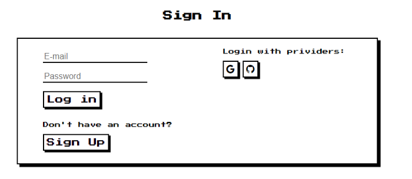
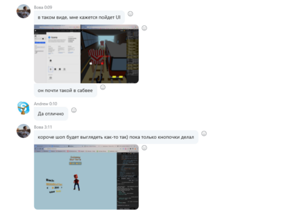
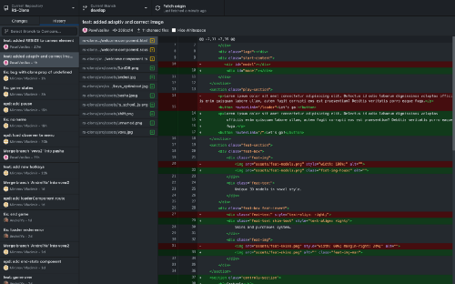
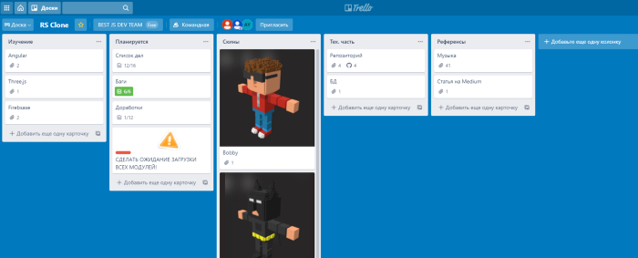
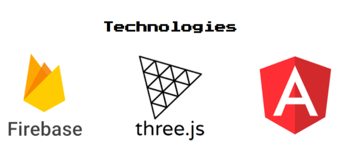

Какие возможности фреймворка THREE.js использовали мы? Да
практически все:
-
- Scene, camera, mesh, clock, renderer, animate,
group;
-
- Ambient Light, Directional Light, Spot Light
-
- Shadows maps
-
- Orbit Controlsй
-
- Управление камерой(математический просчёт движения)
-
- Загрузчики: MTLoader, OBJLoader, FBXLoader, AnimationMixer,
SVGLoader
-
- BenchMark(FPS)
-
- Cache для оптимизации обработки 3D сцен
Уникальные 3D-модели окружения и персонажей:
Была использована среда разработки 3D-моделей MagicVoxel в сочетании с Adobe Illustrator и Adobe Photoshop.
Уникальность
каждой модели заключается в ручном создании каждого элемента, начиная с простой воксельной монетки и
заканчивая полным
игровым окружением вместе с анимированными персонажами.
Система генерации препятствий и монет:
Рандомная генерация препятствий реализауется таким образом, что на пути движения персонажа всегда есть хотя
бы один проходимый участок.
Для повышения производительности игры был разработан буфер прототипов 3Д-объектов, из
которых создаются новые экземпляры.
Система анимаций персонажей:
В игре реализована скелетная анимация с использованием программного пакета Mixamo.
Для воспроизведения и смешивания анимаций используется THREE.AnimationMixer, а для соответствия скорости
игры
устанавливается продолжительность анимации.
В процессе игры можно наблюдать достаточно интересные варианты анимации не только персонажей, но и их
поведений (столкновения, прыжки, кувырки)
Система управления звуком:
Написан полноценный Angular сервис, доступ к которому можно получить из любого компонента приложения, для
управления
звуком.
Возможность управления с клавиатуры:
В игре реализован стандартный алгоритм управления с клавиатуры с добавлением горячих клавиш.
Система авторизации:
Используется Firebase Auth c активированными GitHub и Google провайдерами. Так же реализована верификация
почты.

Координация деятельность команды:
Деятельность нашей команды координировалась на протяжении всего этапа разработки путем постановки задач с
помощью доски Trello и обязательного живого обсуждения посредство Skype мессенеджера.
Работа нашей команды была построена по схеме “Созвон-обсуждение-решение-разработка-созвон”
Рабочий процесс в действии:



Стек используемых технологий:
Angular, TypeScript, THREE.js/WebGL, Firebase

Какие были сложности и как они были решены:
В процессе рандомной генерации препятствий возникали непроходимые участки, в последствии чего пришлось
полностью переписать алгоритм с учётом обязательного отсутствия тупиков и непроходимых участков.
Так как в игре содержится много уникальных моделей, игра вышла достаточно “тяжелой”. Для оптимизации
производительности в параметрах игры доступны настройки алгоритмов рендеринга.
Еще пару слов о курсе RS School и о проделанной работе:
Написать с нуля игру, спустя всего полгода обучения на курсе - задача не из простых. Но только благодрая
командным усилиям это стало осуществимо в сравнительно простой степени. Процесс стал не только технически
сложным и интересным, но и достаточно творческим. Придумать идею, применить фантазию плюс воплотить её в
графику и написать максимально качественный код - всё это в сумме дало вполне хороший результат. Каждый из
нас вынес достаточно опыта, чтобы двигаться в направлении FRONT-END дальше.